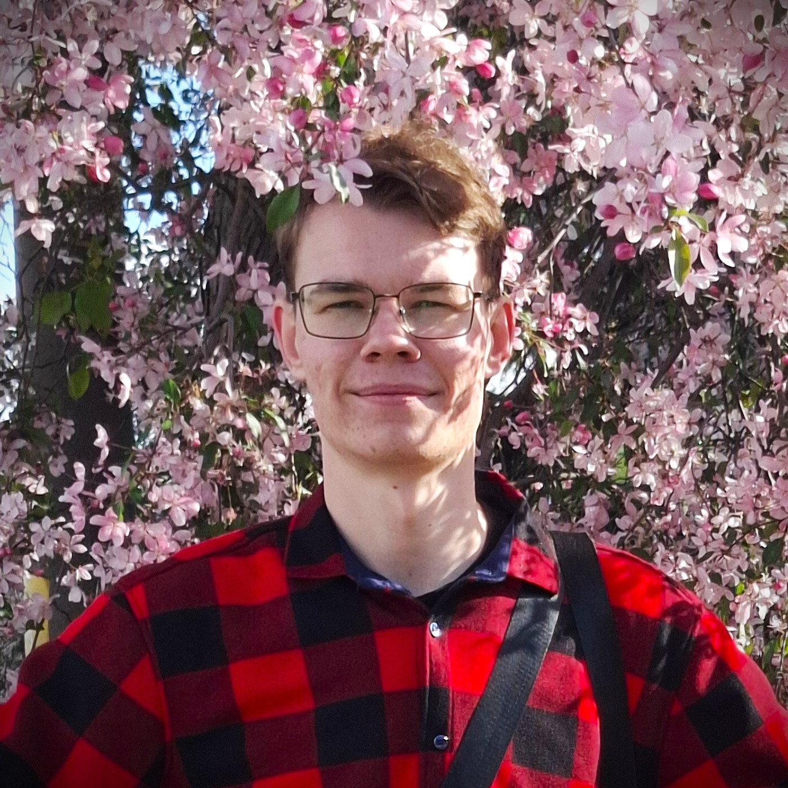
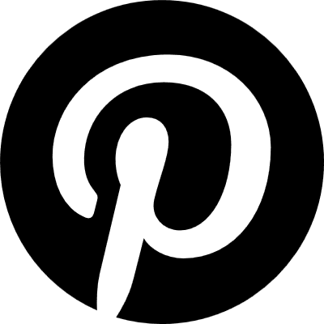
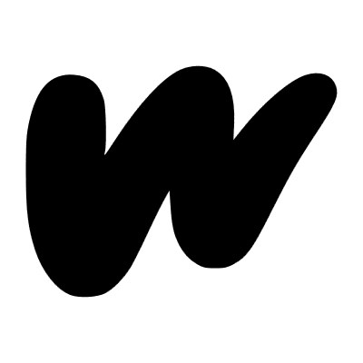
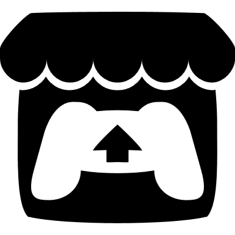
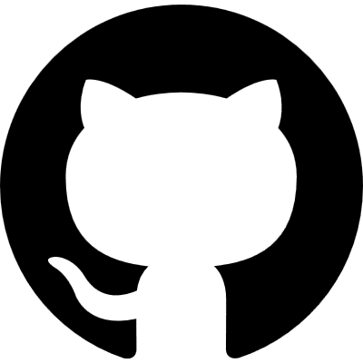
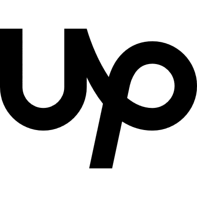

Frontend Development
I create website layouts and can build clean, responsive, and user-friendly websites that will display correctly on all devices and browsers. I pay close attention to code cleanliness and readability to provide a positive experience not only for users, but also for other developers who may work with my code in the future.
What skills do I have?
- HTML5;
- CSS3;
- Responsive Web Design;
- Flexbox and CSS Grid;
- Semantic HTML;
- Basic JavaScript;
- Git and GitHub;
What can you expect from me?
- Clean and well-structured code;
- Responsive layouts for all screen sizes;
- Attention to detail;
- Clear communication;
- Timely delivery;
I am constantly learning and developing new skills, so the range of services I offer will continue to grow. This portfolio is intended to demonstrate what I can do in practice. Below, you can find my web projects, which I work on in my free time to maintain my skills and learn something new. You can find all of these projects in my GitHub repositories.
Creative Activity
My hobby is “creating worlds”. I write stories, create vector and pixel art, and make games. By combining all of these activities, I create my own Universes. If you need a creative solution, I will be happy to help.
Below you will find links to my social accounts, where you can see my work.

See my art on Pinterest

Read my stories on Wattpad

Play my games on Itch

Check out my projects on GitHub

Hire me on Upwork